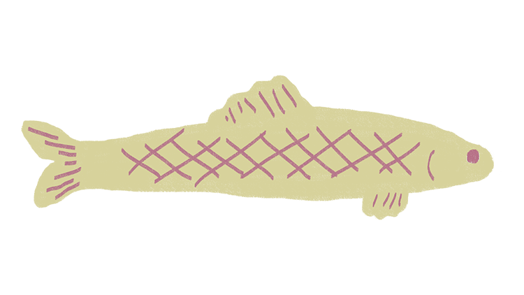
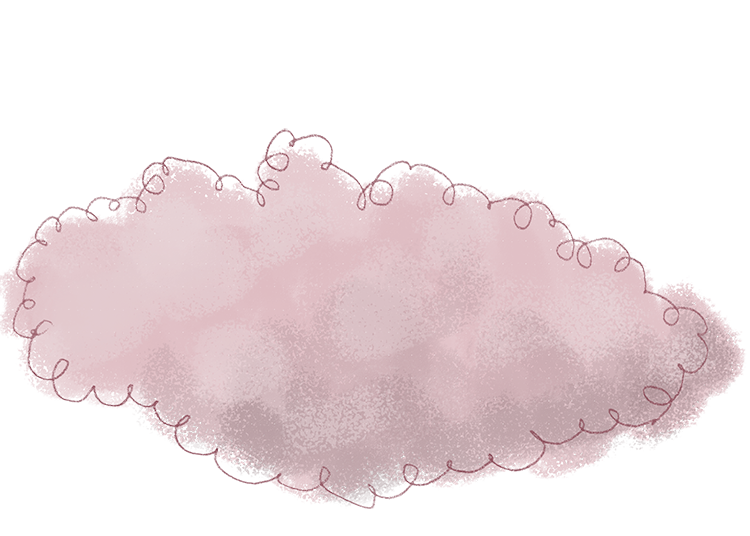
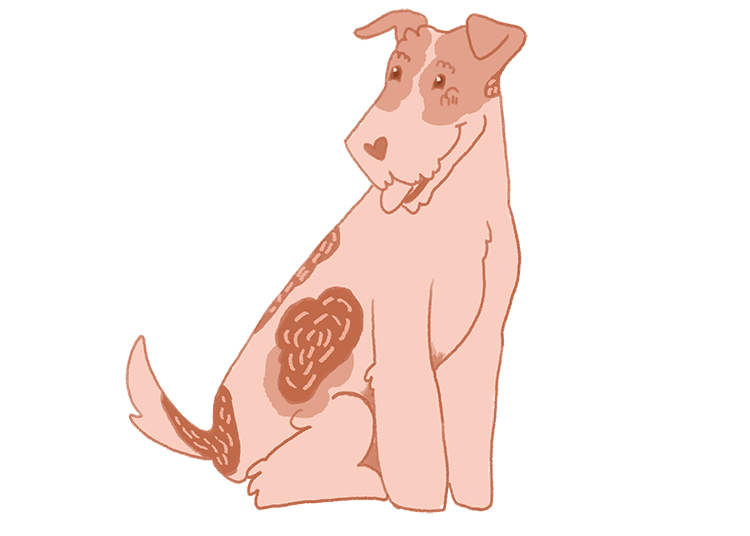
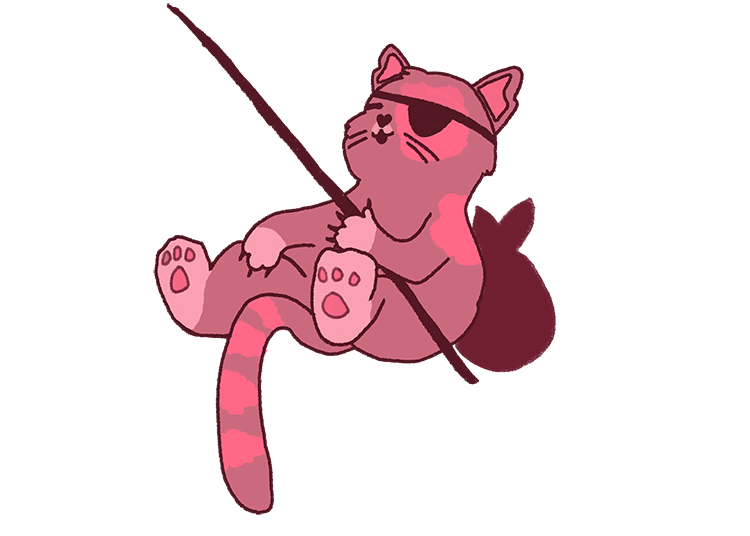
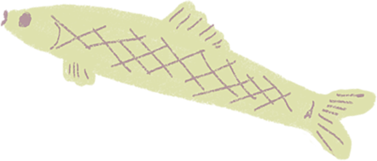
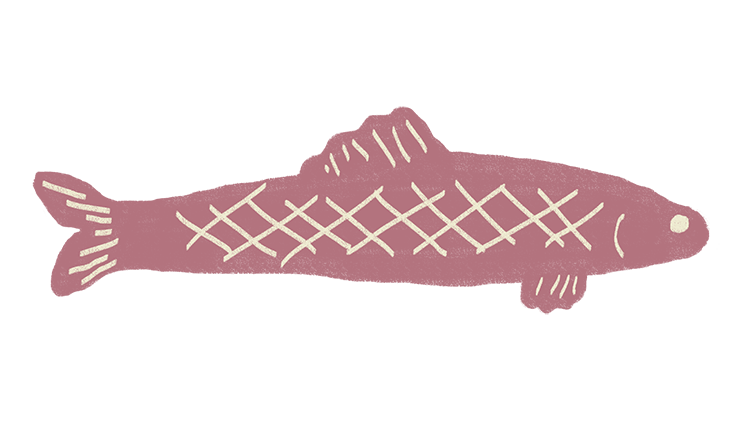
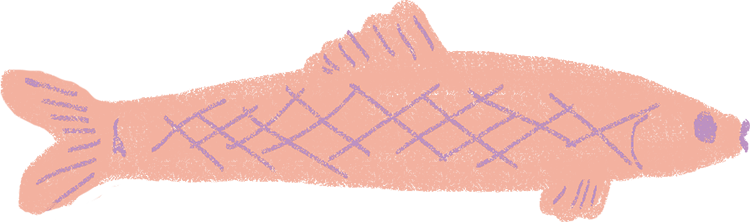

CHAPITRE 2
sur un nuage

  

La tête dans les nuages, Lilo rencontra un chat appelé Mitaine.
 
backgroundPosition sur le fond
opacity sur le texte
text
top sur le div de la ligne de pêche et le poisson
x & y sur le texte, les poissons et le nuage
MotionPathPlugin sur le poisson vert
DrawSVG pour la ligne de pêche
Motion Path sur le poisson
scrollTrigger
trigger=#section2
scrub: true